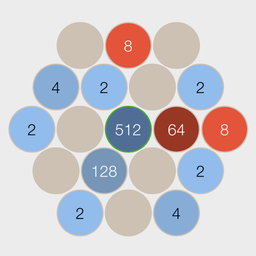

|

Did you enjoy 2048? Take a look at Betract!
This puzzle game will bend your mind :)
Get Betract Free
Changelog:
v1.4.0:
- Added French translation by Rémi Berthoz!
- Added link to Betract
v1.3.2:
- Vanilla is now on GibHub!
v1.3.1:
- Added an option to hide the omnibar icon.
- Updated to comply with the new Chrome extension manifest.
v1.2.0:
- Fixed an autodelete bug.
- Added an option to change the minutes for autodeleting cookies.
- Changed the link for my iPhone game.
v1.1.0:
- Added support for localhost/intranet and sites with ports (at Michaels request).
- Made the icon smaller (a longtime request).
- Removed the donate coffee link from options (it wasn't a heavily used feature) and added a link to my Windows Phone 7 game.
v1.0.0:
- Added warning on options dialog (protected cookies).
v0.9.9:
- Added option: clear unwanted cookies on startup.
If you are going to use this option please make sure that you also disable Clear cookies and other site data when I close
my browser in Chrome.
- Fixed some issues with protected cookies.
v0.9.8:
- Fixed startup (not all windows were refreshed).
- Fixed auto delete unlisted cookies after 30 minutes - cookies will only be deleted after the tab has been closed.
- Fixed: exclude session cookies from protection.
- Added logging (optional).
v0.9.6:
- Removed option: auto delete unlisted cookies after 30 minutes (temporary because of bug).
v0.9.5:
- The popup will now show add/remove commands for all subdomains.
- Improved whitelist options and explanations for subdomains.
v0.9.4:
- Improved startup - refreshes tabs after protected cookies have been restored.
v0.9.3:
- Added option: auto delete unlisted cookies after 30 minutes.
- Added Vanilla icon to new tab page (to enable clear all command).
- Included donate button with the extension.
v0.9.2:
- Added German translation.
- Updated options.
v0.9.1:
- Fixed high CPU bug
- Added update info
- Added diagnostics/info
v0.9.0:
- Added cookie protection
- Rewritten UI
|